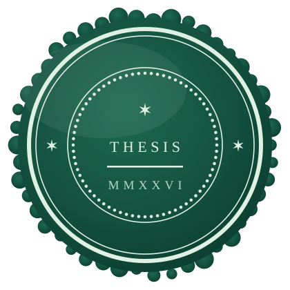

The thesis, by Chris Dias
Everyone in legal technology is racing to make law firms AI-native, and I am one of them. This is about the half of the story the race keeps forgetting: what it means to profess, why that word is the foundation of everything a lawyer does and is, and why it marks the line that AI must never cross.

The direction of travel is no longer seriously in dispute. AI systems can now produce competent first drafts of applications, letters, research notes and advice in minutes, at a marginal cost close to zero. The most advanced new firms have been designed around that fact from day one: the machine does the first pass of the work and lawyers supervise it, rather than lawyers doing the work with machines assisting. The regulators have not stood in the way; the SRA has already authorised firms that deliver legal services through AI. The economics are compelling, the clients feel the benefit in speed and fixed fees, and any firm that pretends none of this is happening is making a decision, whether it admits it or not, to become slowly less relevant.
So I am not writing to resist the change. Lawyery, the firm I co-founded, is making it: virtual first from the start, AI tools built through our sister venture Legalaid, supervised AI work through Countersigned, and now the ambition to become certified AI-native through nativelaw.ai. I want the change. What I am writing to resist is a lazy version of it, and the resistance turns on a single old word.
The word profession has been worn smooth by use. We talk about professional footballers and professional kitchens, and mean only that somebody is paid. But the word carries a much older and much heavier meaning, and lawyers of all people should remember it, because it is where we come from.
Profess comes from the Latin profiteri: to declare publicly, to avow before others; pro, forth, and fateri, to acknowledge, the same root that gives us confess. When the word first entered English it had nothing to do with employment. To be professed was to have taken the vows of a religious order, out loud, in front of witnesses, binding yourself for life to a rule you did not write and could not amend to suit yourself. The profession was not the job; it was the vow. Only later did the word attach to the small group of occupations, divinity, law and medicine, whose practitioners did something structurally similar: they declared publicly that they had mastered a body of learning, and they bound themselves to duties that stood above their own interest and above the market. A professional, in the original and proper sense, is not just someone who is paid to do something. A professional is someone who has professed.
That is not romantic history; it is a live description of what happens to every lawyer of England and Wales. We are admitted in open ceremony. Our names are entered on a public roll. We owe duties to the court and to the administration of justice that override our own commercial interest and, where the two conflict, override the client's instructions too. We are bound by rules and principles we did not write; we answer to a regulator; and what was professed can be stripped away, because striking off is precisely the unmaking of the vow. Everything a client trusts about a lawyer flows from this one act of public declaration. The confidentiality that becomes privilege, the advice that can be relied on, the signature that means someone answers: all of it exists because a human being once stood up and professed, and remains bound by it every working day since.
Law is not a content industry, and the distinction is not ceremonial. When a client instructs a solicitor they are not buying words on a page, however quickly those words can now be produced. They are buying judgement formed over years of cases like theirs and cases nothing like theirs; qualifications and certifications that took a decade to earn and can be lost in an afternoon; a framework of rules, principles and ethics that binds the adviser whether or not it suits them; and, underneath all of it, a named human being who has professed and therefore answers for the advice, to the client, to the regulator and to the court. Nobody has ever framed a chatbot transcript and hung it on the office wall. They frame the admission certificate, because the certificate is the record of the vow.
I have practised immigration law for a quarter of a century now; 2026 marks my twenty fifth year since admission. What clients have wanted from me in that time has changed remarkably little. They want to know whether the marriage evidence is enough, whether the business plan will survive an endorsing body's scepticism, whether to appeal or reapply, whether the risk is worth taking. These are judgement calls. The information needed to make them has always been available to anyone willing to read the Immigration Rules; the value was never the information. It was the experience of watching a thousand cases succeed and fail, and the willingness of someone professed to put their name to a view.
That is why I have come to describe the practice of the future in two words rather than one. AI-native where it saves time and money: intake, document assembly, first drafts, consistency checking, research triage, the honest grunt work that consumed my early years in practice and never deserved the hourly rates it was billed at. Professed where human judgement and experience are being sought; where regulated advice requires a human to take responsibility and exercise oversight; where what the client needs is not output but counsel.
The two are not in tension. They depend on each other. The machine doing the first pass is precisely what frees the professed human to spend their hours on the parts of the work that required the vow in the first place. But the balance has to be designed, deliberately, into the way a firm works. Left to drift, the economics will always pull towards more automation and thinner supervision, because supervision is the expensive part. A firm that lets the drift happen has not become AI-native; it has just become cheaper, and eventually it will find out what that cost.
There is a broad consensus forming, in AI regulation across every domain, that there must be a human in the loop. I agree with the consensus and think it undersells the problem in law. In most domains, human in the loop can honestly mean a review and a button click: a moderator approving flagged content, an operator confirming an automated decision. The human is a checkpoint, and a checkpoint is enough, because the surrounding system carries the accountability.
In law the human in the loop must be a professed human, and that changes everything. The machine can draft, and draft well. It can research, assemble, check and compare. What it cannot do, and what no amount of capability will ever let it do, is profess. It has taken no vow. It sits on no roll. It owes no duty to the court, holds no qualification that can be revoked, carries no liability, and stakes nothing when it is wrong. So the line is not about what the machine is able to produce; it is about what only the professed can provide. Advice becomes legal advice at the moment a person who has professed takes responsibility for it. A solicitor who clicks approve on machine output they have not genuinely engaged with has not moved the work across that line; they have counterfeited the signature. And the consequences are no longer hypothetical: the courts have already warned that careless use of public AI tools on client matters can put legal professional privilege at risk, which means casual AI use can now destroy the very protection that professing creates.
And there is a blunter test than any of this: ask who answers when the rules are broken. A profession is not just a vow; it is regulation, discipline and sanction built around the vow. A solicitor who breaks the rules can be investigated, fined, suspended, struck off; the vow can be unmade in public, and every one of us practises in the knowledge that it can. Now run the same test on the machine. When AI breaks the rules, nothing happens to the AI. There is no persona to summon before a tribunal, no roll to be struck from, no career to end. And its maker is rarely in the room when it happens: terms of use are drafted to keep liability narrow, and whatever indemnities the market begins to offer, no provider yet stands where the solicitor stands, in front of the client, the regulator and the court. The consequences fall on the only party the system can reach: the human who used it. The regulator cannot discipline a model, so it disciplines the solicitor; the court cannot sanction a chatbot, so it sanctions the lawyer who filed its inventions. That asymmetry is not a gap waiting for cleverer legislation to close it. Regulation can only bite on someone capable of answering for what they did, and the only someone in the room is the professed.
Insurance tells the same story from the other direction. A solicitor is required to carry professional indemnity cover, so that when we get it wrong, and we do get it wrong, the client is not left holding the loss; the protection survives even our failures, because the profession made it a condition of practising. The machine cannot hold a policy of its own. And the insurers have noticed: there is a growing debate in that world about what AI does to a law firm's risk, how liability for machine-assisted work should be priced and ring-fenced, and what evidence of responsible use should be required before cover is given. It is not hard to see where that lands. The firm that can show a supervision discipline, with a record of what was checked and who signed, will be insurable; the firm that lets machine output flow to clients unexamined is asking its insurer to underwrite a process nobody is watching. The market will draw the line even where a regulator is slow to.
So human in the loop, in law, has to mean something stronger than a checkpoint: structured review by someone qualified to disagree with the machine; a record of what was checked, changed and rejected; an identifiable professional whose name goes on the outcome and who carries the liability; and an ethical framework, not just a workflow, governing when the machine should not be used at all. The machine may do everything up to the line. The line itself belongs to the professed.
The standard objection arrives on cue whenever supervision is proposed: the human is the bottleneck. Machine output flows at machine speed, and a lawyer who insists on reading, testing and questioning it slows everything down. The observation is correct and the complaint is confused. The bottleneck is not a flaw in the system; the bottleneck is the point. A profession is a deliberate narrowing: of who may advise, of what may be promised, of how quickly a conclusion may be reached when someone's life or business depends on it. Professions exist to serve, to specialise and to certify, and each of those three words is a promise of care taken, not of speed achieved. We built the narrow place on purpose, and we put a person in it.
AI is not a religion. Its outputs are not revelations to be received on faith, however fluent the prose; fluency is precisely what makes misplaced faith easy. A system that produces plausible words deserves the treatment we give any persuasive witness: verification. That is not hostility to the technology. It is the technology taken seriously enough to check.
Consider, too, what kind of thing law actually is. It is not a database with a right answer waiting at the end of a query; it is a permanent, structured disagreement. Courts and tribunals exist because parties conflict, about what the law is, about what the evidential standard requires, about whose client is right and whose interpretation should prevail. Every reported case is a record of at least two qualified lawyers reading the same materials and reaching opposite conclusions, one of them instructed, in effect, to be wrong. One immutable and definite answer never truly exists; and where something close to one does, it holds only until a higher court, a new statute or a better argument moves it. A machine can be trained to state the current consensus with great confidence. What it cannot do is sit inside the disagreement, and the disagreement is where the practice of law actually happens. That is not a temporary limitation waiting on a bigger model; it is the nature of the subject.
And law resists the machine mind in a deeper way still. The law is not a fixed logical system waiting to be computed. It can be interpreted logically and, when justice demands it, illogically; today's good law may be inverted tomorrow by a higher court or a determined Parliament. It is shaped by fact and by precedent, by novel argument and by statute, by new ideas and by changing times. I have watched the Immigration Rules rewritten under my feet more times than I can count, and some of the best results of my career came from arguing that yesterday's settled position should not survive today's facts. A machine trained on yesterday's law will reproduce yesterday's law beautifully; the lawyer's work is often to know when it should not be reproduced at all.
And there is a harder truth underneath that one. A law can be right in the narrow sense, validly passed, on the books, applied by the courts, and still be wrong. Apartheid was law. Slavery was law. Colonialism was administered through law, in statutes drafted with great care and enforced with perfect procedural correctness. A machine asked what the law was would have answered those regimes faithfully, and would have been accurate. It took human beings to see that lawful and just are not the same word, and to fight the difference, in courtrooms and outside them, with lawyers frequently among those doing the fighting. That capacity, to apply the law while refusing to mistake it for justice, is not a feature that can be trained in; it is a conscience, and it comes only with the person. Law is human, made by humans for humans, remade whenever humans change their minds and resisted when humans find the courage. So the lawyer must be human too.
I should be honest about the register of this piece. It is not an academic paper, and I make no claim that every thought in it is original. Much has been said about judgement becoming the bottleneck of the AI age, though almost all of it treats the bottleneck as a problem to be engineered away; philosophers have argued the gap between lawful and just for centuries; legal scholars were writing about the indeterminacy of law long before anyone trained a model on it. Even the manifesto's framing is borrowed: Rome wrote the Twelve Tables because the plebeians refused to live under law that existed only in patrician memory, and commitments written down in public, where they cannot be quietly rearranged, are the oldest legal technology there is. This site is that move made again. What I am offering is not novelty. It is the natural understanding of the limits of pure logic that a quarter of a century of practice gives you, written down at the moment the industry seems busiest forgetting it.
And the claim of non-novelty is checkable, because the mapping has been done. Set the twelve declarations against the rules that already bind lawyers in England and Wales, the SRA's Standards and Regulations and the BSB Handbook, and almost every one turns out to be an existing obligation restated: the accountability for work carried out through others, the duty not to mislead, the properly arguable threshold, the confidentiality that becomes privilege, the compulsory insurance, the requirement to be able to justify your decisions. Both regulators have now said the same about AI in terms; neither has written new rules, because the old duties already reach the machine. The mapping is published provision by provision on this site. So nothing here asks the profession to be rewired. It asks for a refresher, timely rather than novel, of what was always professed, read again at the moment the machine makes it urgent.
Because here is what the law has always known about itself: it is flawed, and it says so openly. Every right of appeal is the system admitting its first answer may be wrong; every dissenting judgment is the system preserving the argument it just rejected, in case the future needs it. The law survives and evolves precisely because of this inherent imperfection; the flaw is not a weakness in the mechanism, the flaw is the mechanism. Humanity is imperfect in exactly the same way, because nature is imperfect, and imperfection is how nature moves: nothing evolves that was already finished.
And AI is a product of humanity and of nature. It is trained on our words, our judgments, our contradictions and our mistakes, built by imperfect makers from imperfect material. It cannot ever transcend that truth; it inherits our imperfection at scale and at speed, wrapped in a fluency that hides it. There is no shame in this, and no surprise. But it means the machine can never be the still point the system checks itself against. Only something that knows it is flawed, and has publicly promised to answer for it, can do that. The law found its answer seven centuries ago. It professed.
I write from experience, and a lot of what I write about may not be visible from outside the profession; and outside the profession is where the funding now stands. To a technology company, law looks like any other services industry awaiting its software moment: documents in, documents out, high prices, slow delivery, margins wide enough to arbitrage. To the venture capital world the pitch writes itself; legal is the next great vertical for the AI revolution, a market the decks measure in hundreds of billions, guarded by nothing more impressive than a guild and its habits. Seen from that height, the ancient structures and the stubbornly human workflows are not the character of the thing; they are the inefficiency, the easiest target for change and for profit in the whole economy.
I understand the reading, and I am not writing from behind the moat; I have spent years enthusing about technology in law, and over the last year I have become personally involved in building it. Part of the outside view is simply correct: the profession has sheltered real inefficiency, and no tears need shedding for it. The error is subtler. It is to mistake the whole of law for its inefficiencies; to look at what practitioners have curated and see only what they failed to streamline. The structures that look ceremonial are load bearing. The roll, the vow, the duties that outrank the client and the market, the privilege that shields what a client tells their lawyer: none of these arrived by accident or survive on nostalgia. Each was built, and kept, by people who had watched what happens without it. Law has been curated by its professionals, generation by generation, not because lawyers dislike efficiency, but because the thing being protected does not survive careless handling. You cannot know that from the outside; it is learned by living within the profession, in the history and the humanity of the law itself.
Strip that away in the name of disruption and what remains may be fast, cheap and fluent, but it is no longer authentic law; it is a product shaped like law, binding no one, answering to no one, with nobody professed standing behind it when it is wrong. That is why the true revolution runs the other way. The prize is not law remade as another software market; it is AI built native to what law actually is: the machine given everything up to the line, and the vow kept on the other side of it. Harder to build, slower to sell, and the only version worth having.
People sometimes assume the two halves of my working life sit oddly together: twenty five years of immigration practice on one side, and legal AI governance on the other. I think they only make sense together. The technology people can build the loop; only practitioners know what the human in it actually has to do, because we are the ones who professed. Every piece of work I have sent into the world since my admission has carried my name, and that line of ink is not a signature in the ordinary sense. It is the vow, renewed one client at a time, and it is the one thing I will not let the machine touch.
The machine can draft. A lawyer can profess.
Declaration II
The thesis in twelve declarations, set out plainly as a line in the sand. And once the idea has made its case, see where it is already being put to work.
Read the manifesto See it in practice professed
professed